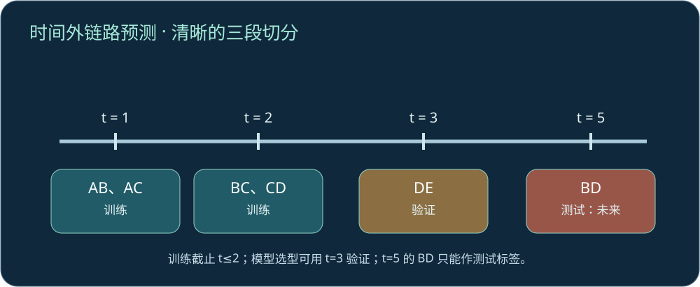
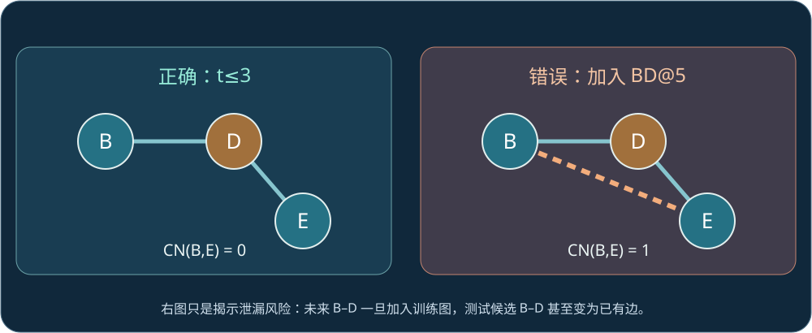

SECOND REVIEW · REPRODUCIBLE GRAPH SCIENCE
同一条未来边，
会怎样污染整张图？
一条尚未发生的 B–D 合作边，如果在测试前进入图表示，不仅会使 B–D 从“待预测边”变成“已有边”，还会改变无关候选 B–E 的共同邻居、随机游走上下文与图卷积的归一化。下面通过完全可复算的小图说明这些错误如何在多种算法中同时出现。
数据身份：五个匿名合成节点 A–E、六条时间戳事件；无真实个人或公司数据。含真实历史网络的另一组静态拓扑实验独立运行，两者不可合并成同一套评估分数。
1. 从原始事件切训练、验证和测试
事件按时间排序：AB@1、AC@1、BC@2、CD@2、DE@3、BD@5。训练 t≤2、验证 t=3、测试 t=5；第 3 时刻的 D–E 可用于验证，但最终是否允许在测试前重新并入训练图，必须由固定协议决定。本示例展示在模型规则已确定后，使用 t≤3 累积已观察图进行测试特征计算，严格不使用 t=5 的 B–D。节点集合从头到尾保持 A、B、C、D、E，包括孤立点。

| 时点 | 可见事件 | 训练/评估许可 | 为什么需要区分 |
|---|---|---|---|
| t≤2 | AB AC BC CD | 训练期 4 条边 | 可用于训练参数及初始特征 |
| t=3 | DE | 验证期新边 | 用于选择模型/超参；是否并回取决于测试协议 |
| t≤3 | AB AC BC CD DE | 固定规则后的累积可见图 | 可用于 t=5 之前的预测特征（须预先声明） |
| t=5 | BD | 未来观察正例 | 绝不能倒灌训练特征；只能核对测试标签 |
2. 交互：把未来边偷放进去，会出现哪些变化？
选择不同的观察截止时间。t=5 模式是专门模拟错误操作的反例，并不是合法训练设置。共同邻居 CN(B,E) 在 t≤3 时为 0；提前加入未来 B–D 后，D 变成 B 和 E 的共同邻居，变成 1。同时 B→D 无偏一阶游走概率由 0 变成 1/3，GCN 含自环对称权重由 0 变成 1/4。
合规可见历史：截至 t=3 的图不包含未来 BD@5。
未来 B–D 是否成为训练已知边：否；测试候选 B–D 的资格：可以候选。当这条边已经进入训练，正确的候选验证器必须拒绝给它再打“预测新边”分数。

3. 为什么同一漏洞会污染图嵌入、GCN 与图推荐？
DeepWalk / node2vec：训练时的游走必须只沿当时可见边采样。若提前让 B–D 出现，即使没有直接使用“测试标签”，从 B 一步走到 D 的概率就从 0 变为 1/3，构造的节点上下文和后续向量都已包含未来信息。node2vec 的二阶游走还会受前一节点和 p/q 条件影响，因此这个 1/3 仅是无偏一阶游走的核对值，不是任意 node2vec 参数下的概率。
GCN：单层对称归一化 D̃⁻¹/²(A+I)D̃⁻¹/² 使用图的结构及度数。洁净图中 B–D 不相邻，消息系数是 0；错误加入未来 B–D 后，两节点含自环度均为 4，系数变为 1/√(4×4)=1/4。更进一步，其它边的归一化系数也会随着 B、D 的度数变化而变化。这不是已经训练过的 GCN 模型效果。
LightGCN：用户—物品网络另外构造 U1–X、U1–Y、U2–Y，若用户 U2 第四周才点击 X，就必须在第四周之前把 U2–X 留在训练图外。基础 LightGCN 不加自环：U1–X 系数原为 1/√(2×1)=0.707107；把未来边 U2–X 放进去后，X 的度从 1 升到 2，U1–X 系数变成 1/2。U2–X 新增消息系数也是 1/2。这与上一段无向五节点合作图是两个分开定义的玩具实验，不应把边集强行混合。
是否加自环、度数是否使用原始或自环图，要由具体算法定义决定；这个公式用于没有自环的 LightGCN 二部图。不能用带自环 GCN 的数值替代它。
4. 时间尊重路径与时间切分：两个不同维度
时间切分限制预测时可以访问哪些观测；时间尊重路径则额外限制消息沿接触边传播的顺序。例如 A–B@1、B–C@2、C–D@3 允许从 A@0 在 t=1、2、3 依次到达 D；把事件顺序改成 A–B@3、B–C@1、C–D@2 后，即使静态聚合图不变，严格递增时间规则下 A 无法到达 C、D。
如果 A–B 和 B–C 同时在 t=1 发生，本页采用“同时间批次冻结上一时刻到达”的严格模型，不允许 A 经两条零时间边在同一时刻到达 C。这是明确约定的一种事件传播规则，不必适用于所有物理过程或论文实现。
从 A@0 出发，最早到达时间：
这与“训练截止后能不能见到未来测试边”是两个不同检查项：一个控制事件可见性，一个控制路径合法性，缺少任意一个都可能得出虚假信息传播结论。
5. 一个公开历史网络可复算，但不能伪装成时序预测
NetworkX 内置 Zachary Karate Club 社会关系网络，官方文档注明节点编号在库中为 0–33、相对于原论文从 1 开始；边带有互动情境计数权重。以 NetworkX 3.x 典型数据结构读取，节点 34、无向边 78、连通分量 1；忽略权重后可数出 45 个三角形。此处的三角形数量通过独立的邻接集合枚举核验，而不仅依赖调用一次 nx.triangles。这些是静态结构事实，不是任何历史分裂的因果解释。原始官方数据文档。
为什么不把 Karate Club 随便按边序号切分为训练与未来预测？因为这个经典快照没有提供可用于该目的的可靠事件时间顺序。随意编造一个时间标签就不能声称复现真实历史预测。它适合度、聚类系数、三角形、社团方法的静态验证，而真实时序预测应选择附带明确时间戳和官方评估协议的数据。OGB Link Property Prediction 列出了不同数据集的切分和评价器约定。
| 可运行实验 | 数据类型 | 核查结果 | 不支持的结论 |
|---|---|---|---|
| temporal_audit.py | 六条合成带时事件 | 时间切分、CN、游走、GCN、LightGCN、严格时间路径 | 真实模型训练成绩 |
| public_karate_audit.py | NetworkX 内置历史图 | 34 节点、78 边、45 三角形、连通分量 1 | 任何时间外链接预测或历史因果归因 |
6. 从零验证：标准库 + 独立 NetworkX oracle
# 在仓库根目录运行；第一条脚本只有标准库依赖
cd v2
python -m experiments.temporal_audit
# 公开历史图由 NetworkX 安装包提供，不调用互联网采集 API
python -m pip install 'networkx>=3.3,<4'
python -m experiments.public_karate_audit
# 检查跨章数据契约、泄漏守卫、图结构与网页
python -m unittest tests.test_research_round -v
python scripts/migrate_lessons.py --check
python scripts/build_web.py --check
node --test tests/web/*.test.cjs输出是包含源事件时间、候选分数、图结构差异与限制说明的 JSON。若要做真正研究：还必须增加训练域/测试域说明、候选池构建规则、未标注样本与假负例处理、验证集选择、固定版本、随机种子、多轮重复及真实测试误差区间。OGB 中有些数据集允许模型选择后在指定条件下并入验证边，有些则使用不同规则；不能推广成“任何预测都必须永远不许使用验证边”这样的绝对命令。
原始来源、证据边界及审计记录
- OGB 官方：Link Property Prediction。提供数据集特定时间拆分、候选与评价协议。
- New Perspectives on the Evaluation of Link Prediction Algorithms for Dynamic Graphs。关于动态链接预测的负例采样和评估问题。
- Kipf & Welling：GCN。对称归一化与图卷积机制。
- He 等：LightGCN。用户—物品图上的简化归一化传播。
- Holme & Saramäki：Temporal Networks。事件序列与时间尊重路径。
- NetworkX 官方 Karate Club 图数据文档。
证据逐条登记在 v2/content/research/temporal-audit-evidence.json，数值断言位于 v2/tests/test_research_round.py。所有人工反例和实验输出都标注为数学教学结果，未以真实模型测试成绩替代。